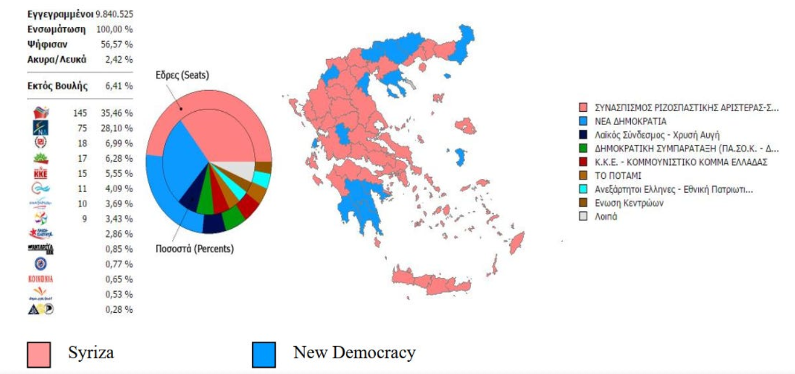
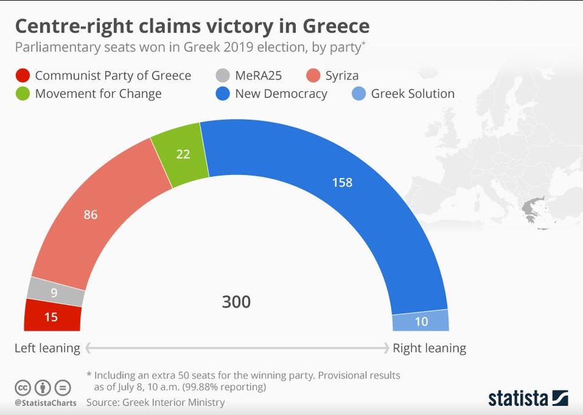

El 14 de diciembre de 2025, Chile eligió como presidente al candidato derechista José Antonio Kast Rist. Para algunos, este resultado fue sorpresivo, especialmente si se considera que entre 2022 y 2025 el país estuvo gobernado por una coalición de izquierda —FA-PC-PS— cuya aspiración central, además de conducir a Chile tras la pandemia y el estallido social, era consolidar un proyecto político capaz de asegurar la continuidad de gobiernos de izquierda en el país.
Ese objetivo, sin embargo, fracasó. Tanto a nivel parlamentario como en términos de respaldo ciudadano, la izquierda chilena enfrenta hoy su peor escenario desde el retorno a la democracia.
Para otros, en cambio, este desenlace no fue una sorpresa, sino la repetición de un patrón ya observado en otras partes del mundo: sociedades que, tras experimentar gobiernos de izquierda fuertemente ideologizados, reaccionan políticamente y terminan abriendo el camino a proyectos de derecha. Un caso paradigmático de este fenómeno es Grecia entre 2015 y 2019, período en el que el país fue gobernado por una mayoría de izquierda liderada por SYRIZA, una fuerza anti-establecimiento, anti-austeridad y de carácter radical, cuyo fracaso terminó facilitando un giro conservador.
El origen de esta historia no se sitúa en 2015, sino en 2008, con la crisis subprime. Hasta entonces, Grecia había sostenido su crecimiento económico sobre un endeudamiento creciente y un sector productivo poco competitivo dentro del marco de la Unión Europea. Para evitar el colapso financiero y fiscal, el país recurrió a programas de salvataje internacional, lo que implicó un aumento sustancial de la deuda y la imposición de duras condiciones económicas.
Entre 2009 y 2012, las consecuencias se hicieron evidentes: el producto interno bruto cayó abruptamente, el desempleo se disparó —especialmente entre los jóvenes— y amplios sectores de la población vieron deteriorarse rápidamente sus condiciones de vida. En este clima de profundo descontento social, donde la ciudadanía responsabilizaba a los partidos tradicionales —Nueva Democracia (derecha) y PASOK (centroizquierda)— comenzó el ascenso de Syriza.
Bajo el liderazgo del joven y carismático Alexis Tsipras, Syriza logró canalizar el malestar social mediante un discurso abiertamente anti-establecimiento, centrado en la denuncia de la austeridad, la recuperación de la soberanía nacional y una retórica crecientemente crítica hacia la Unión Europea. La promesa era clara: restaurar la dignidad social perdida. Este mensaje resonó con especial fuerza entre la juventud, en un contexto donde el desempleo juvenil superaba el 50 %.
Fue precisamente este voto joven, impulsado por la frustración económica y el rechazo al orden político existente, el que permitió a Syriza encadenar victorias electorales entre 2012 y 2015, hasta consolidarse como mayoría parlamentaria y fuerza de gobierno.

La victoria tuvo un impacto que trascendió a Grecia. Para la izquierda global, Syriza se convirtió en un símbolo. Movimientos como Podemos en España lo presentaron como referente ideológico y modelo de gobernanza. No es una coincidencia menor que Podemos fuera, a su vez, una de las principales influencias ideológicas de Convergencia Social, posteriormente conocida como Frente Amplio en Chile. Sin embargo, la experiencia griega demostraría ser breve.
Uno de los pilares centrales del discurso de Syriza fue la confrontación con la troika y la posibilidad, al menos retórica, de un Grexit. El verano de 2015 marcó el momento decisivo. Grecia seguía atrapada en su segundo programa de rescate, la economía no se recuperaba y el gobierno se negaba a continuar con privatizaciones y alzas de impuestos exigidas por los acreedores. En este contexto, Tsipras convocó a un referéndum para decidir si se aceptaban o no las condiciones de la troika y un tercer salvataje.
El resultado fue contundente: el 61 % votó por el “NO”, priorizando soberanía y dignidad por sobre la austeridad. Pero la presión externa no tardó en hacerse efectiva. Tsipras, que había subestimado el poder real de la troika, comprendió que rechazar el acuerdo implicaba empujar al país hacia un colapso económico inmediato, mientras que aceptarlo significaba destruir el núcleo de su discurso anti-élite. Tres días después del referéndum, firmó el acuerdo, bajo condiciones incluso más duras que las inicialmente rechazadas.
Este episodio dejó en evidencia que, detrás del discurso ideologizado, no existía un plan alternativo viable. El gobierno había asumido que la Unión Europea cedería ante la presión democrática, lo que nunca ocurrió. A partir de ese momento, el proyecto de Syriza entró en declive. La llamada “revolución” duró apenas seis meses. Tsipras renunció y luego regresó, pero el escenario ya había cambiado: no había épica ni confrontación, solo un gobierno inexperto administrando la austeridad que había prometido combatir.
Las consecuencias fueron profundas. Syriza se fragmentó, con la salida de sus sectores más radicales; no logró generar empleo ni nuevas oportunidades, frustrando especialmente a la juventud que había apostado por el proyecto; el costo de vida siguió aumentando; y, pese a su discurso contra el Estado sobredimensionado, el aparato público se expandió y se llenó de militantes, debilitando la meritocracia. A ello se sumaron escándalos como el caso Novartis y una gestión deficiente de las olas migratorias. El desgaste fue rápido y la pérdida de credibilidad, irreversible.
Para 2019, Grecia buscaba otras prioridades: estabilidad económica, empleo, control del crimen y de la migración. Nueva Democracia llegó a las urnas con la narrativa de un “gobierno de emergencia” orientado a normalizar el país. Tras años de agitación política, la sociedad estaba cansada de la ideología y demandaba gestión.
El 7 de julio de 2019, Nueva Democracia ganó las elecciones con cerca del 40 % de los votos, devolviendo a la derecha al poder. Syriza conservó una bancada relevante, pero su ciclo político estaba agotado. El enfoque tecnocrático y pragmático de ND se tradujo rápidamente en mejoras: disminuyó el desempleo, volvió el crecimiento, se expandieron los servicios digitales, llegó la inversión y se recuperó la credibilidad internacional.

Grecia recurrió a Syriza buscando un cambio radical en medio de la crisis, pero el proyecto colapsó cuando la realidad económica se impuso. Tras la capitulación de Tsipras, el hechizo se rompió. Cuando surgió una alternativa percibida como competente, la sociedad la adoptó sin nostalgia.
Por ello, lo ocurrido en Chile no fue una anomalía. Es un desenlace recurrente cuando una izquierda llega al poder impulsada por el descontento social, pero sin experiencia real de gestión ni capacidad para cumplir sus promesas. En esos casos, el mismo malestar que permitió su ascenso termina empujando a la ciudadanía hacia otra opción política. Un fenómeno que merece un análisis más profundo, que quedará para otra ocasión.